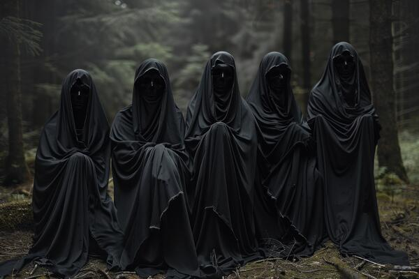

History

Night Raid berdiri ketika 10 pemuda berkumpul untuk membahas masa depan negaranya yang sedang diambang kehancuran karena banyak para pejabat yang melakukan praktik korupsi, nepotisme, perdagangan manusia, perbudakan dan perjudian. Pembahasan ini menghasilkan sebuah gerakan revolusioner dengan melatih para anggotanya menjadi pembunuh bayaran. Organisasi ini bergerak secara rahasia dan misterius. dengan adanya laporan dan keluhan dari masyarakat mengenai sikap dan perilaku pejabat yang dianggap merugikan negara dan rakyat, kami langsung membentuk tim investigasi secara independen.Adapun hasil investigasi dari tim pengintai kami, menghasilkan keputusan bahwa laporan itu benar dan valid maka kami akan mengirimkan tim eksekusi dan memberikan surat peringatan kepada pihak yang dilaporkan untuk meminta maaf, mengaku kesalahan, dan berjanji untuk tidak mengulangi perbuatannya kembali dengan cara menyatakan secara lisan, di ruang publik terbuka, dan di saksikan oleh masyarakat. Apabila pihak yang dilaporkan tidak membuat pernyataan tersebut atau sudah melakukan pernyataan itu tapi masih mengulangi perbuatan buruk, maka tim eksekusi dapat melenyapkannya dengan cara apapun tanpa melibatkan rakyat yang tidak bersalah.